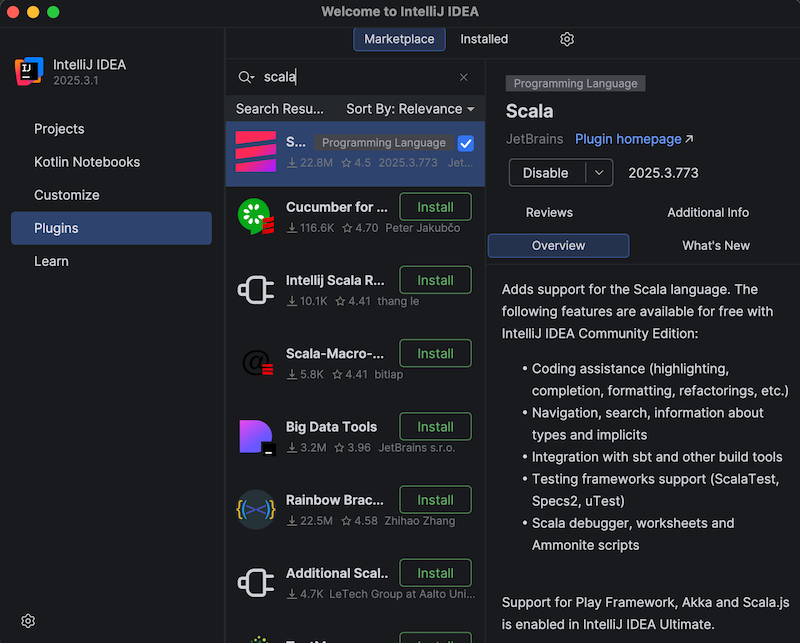
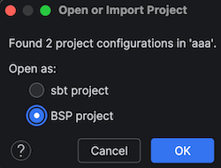
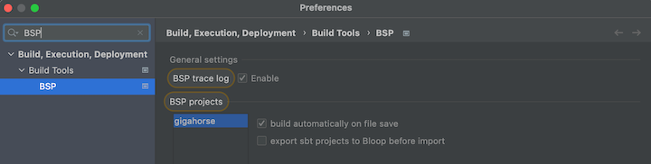
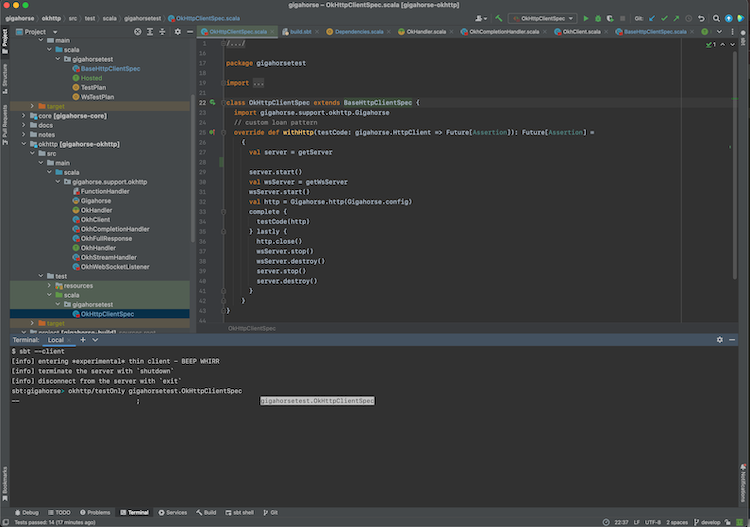

IntelliJ IDEA へのインポート
目的
sbt を使ったビルドを IntelliJ IDEA にインポートしたい。
手順
IntelliJ IDEA は JetBrains社が開発した IDE で、Community Edition は Apache v2 ライセンスの元で公開されている。IntelliJ は sbt を含む多くのビルドツールと連携してプロジェクトをインポートする。
IntelliJ IDEA にビルドをインポートするには:
- Plugins タブから Scala プラグインをインストールする:

- Projects から
build.sbtを含むディレクトリを開く:

- インポートが完了したら、Scala ファイルを開いてコード補完が動作することを確認する。
IntelliJ Scala プラグインは独自の軽量コンパイルエンジンでエラーを検出する。高速だが誤検出することもある。compiler-based highlighting に従い、IntelliJ を Scala コンパイラでエラーハイライトするよう設定できる。
IntelliJ IDEA のデバッガー
- IntelliJ は、コードにブレークポイントを設置できるデバッガーを持つ:

- ユニットテストを右クリックして「Debug '<test name>'」を選択すると対話的デバッグを開始できる。または、ユニットテスト近くのエディタ左側の緑の run アイコンをクリックしてもよい。テストがブレークポイントに達すると、変数の値を確認できる:

デバッガーセッションの操作方法の詳細は、IntelliJ ドキュメントのコードのデバッグを参照。
代替方法
IntelliJ IDEA のビルドサーバーとして sbt を使う（上級者向け）
IntelliJ にビルドをインポートするということは、実質 IntelliJ をビルドツール兼コンパイラとして使うことになる（compiler-based highlighting も参照）。多くのユーザーはその方式で満足しているが、コードベースによってはコンパイルエラーの一部が誤検出になる、ソースを生成するプラグインとうまく連携しないなど、sbt と同一のビルドセマンティクスでコーディングしたい、といった場合がある。幸い、現代の IntelliJ は Build Server Protocol (BSP) 経由で sbt を含む代替の「ビルドサーバー」をサポートしている。
IntelliJ で Build Server Protocol (BSP) を使う利点は、実際のビルド作業に sbt を使うことである。横で sbt セッションを起動していたようなプログラマーなら、二重コンパイルを避けられる。
| Import to IntelliJ | BSP with IntelliJ | |
|---|---|---|
| Reliability | ✅ Reliable behavior | ⚠️ Less mature. Might encounter UX issues. |
| Responsiveness | ✅ | ⚠️ |
| Correctness | ⚠️ Uses its own compiler for type checking, but can be configured to use scalac | ✅ Uses Zinc + Scala compiler for type checking |
| Generated source | ❌ Generated source requires resync | ✅ |
| Build reuse | ❌ Using sbt side-by-side requires double build | ✅ |
IntelliJ で sbt をビルドサーバーとして使うには:
- Plugins タブから Scala プラグインをインストールする。
- BSP 方式を使うには、IntelliJ を終了し、既存の
.ideaディレクトリがあれば削除する。 - ターミナルで
sbt bspConfigを実行して.bspディレクトリを生成する。 - IntelliJ を開き、
build.sbtファイルを開く。プロンプトが表示されたら BSP project を選択する:

- インポートが完了したら、Scala ファイルを開いてコード補完が動作することを確認する:

一部のサブプロジェクトを BSP から除外するには、次のセッティングを使う:
bspEnabled := false
- Preferences を開き、BSP を検索して「build automatically on file save」にチェックを入れ、「export sbt projects to Bloop before import」のチェックを外す:

コードを変更して保存すると（macOS では Cmd-S）、IntelliJ が sbt を呼び出して実際のビルドを行う。
詳細は Igal Tabachnik さんの Using BSP effectively in IntelliJ and Scala も参照。
sbt セッションへのログイン
We can also log into the existing sbt session using the thin client.
- Terminal セクションで
sbt --clientと入力する:
これで IntelliJ が起動した sbt セッションにログインできる。その中で testOnly や他のタスクを、すでにコンパイル済みのコードに対して呼び出せる。